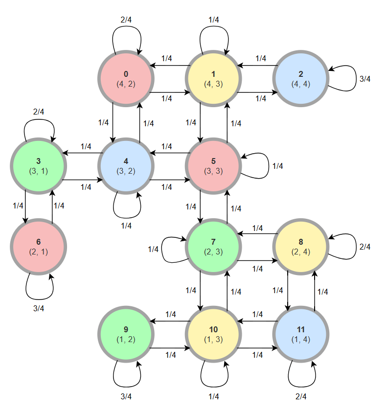

Considere o robô da lista anterior, que pode se mover pelos quadrados da figura abaixo.
Para tentar melhorar a previsibilidade de se detectar a posição do robô da Figura 1, sensores são
colocados no ambiente onde o robô circula. Há 4 tipos de sensores (R, B, Y, G), conforme mostrado
na Figura 1. Quando o robô está em qualquer um dos quadrados o respectivo sensor emite um sinal
(para um receptor) com a letra igual ao tipo do sensor. Entretanto, os sensores não são perfeitos,
e podem emitir um sinal errado com probabilidade 0.1. Por exemplo, quando o robô está num dos
quadrados azuis, emite um sinal b com probabilidade 0.9, ou um dos restantes sinais r ou y ou g;
com probabilidade 0.1/3. Como outro exemplo, suponha que o robô esteja na posição inicial conforme
mostrado na Figura 1. Em 3 unidades de tempo, uma possível sequência de sinais recebidos poderiam
ser r g b, se o robô for para norte e depois para leste. Entretanto, mesmo com o mesmo movimento,
os sinais recebidos poderiam ser também r g g ou b b b, etc.
Seu objetivo é determinar a posição do robô, a partir dos sinais recebidos dos sensores.
Segue a ilustração da cadeia de Markov para o problema.

Para criar o HMM desse problema, precisamos de:
| \ Estado | ||||||||||||
|---|---|---|---|---|---|---|---|---|---|---|---|---|
| 0.9 | 0.1/3 | 0.1/3 | 0.1/3 | 0.1/3 | 0.9 | 0.9 | 0.1/3 | 0.1/3 | 0.1/3 | 0.1/3 | 0.1/3 | |
| 0.1/3 | 0.1/3 | 0.9 | 0.1/3 | 0.9 | 0.1/3 | 0.1/3 | 0.1/3 | 0.1/3 | 0.1/3 | 0.1/3 | 0.9 | |
| 0.1/3 | 0.9 | 0.1/3 | 0.1/3 | 0.1/3 | 0.1/3 | 0.1/3 | 0.1/3 | 0.9 | 0.1/3 | 0.9 | 0.1/3 | |
| 0.1/3 | 0.1/3 | 0.1/3 | 0.9 | 0.1/3 | 0.1/3 | 0.1/3 | 0.9 | 0.1/3 | 0.9 | 0.1/3 | 0.1/3 |
Denotemos essa primeira sequência para a questão como , e uma sequência de estados qualquer até o tempo como .
Queremos encontrar a probabilidade , que será dada pela soma das probabilidades de cada caminho possível gerar essa observação, i.e, a probabilidade conjunta de e . Então queremos a probabilidade:
A princípio, poderíamos fazer essa conta calculando a probabilidade de cada caminho gerar a sequência, mas é impossível de fazer em tempo hábil. Então, descreveremos um algoritmo que usa a técnica de programação dinâmica para reduzir a quantidade e cálculos para resolver o problema para uma sequência qualquer .
Primeiramente, definamos a função que nos dá a probabilidade de observar parte da sequência até um tempo e estar no estado :
Então definamos a recursão:
Dessa forma queremos calcular:
Ou seja, a soma das probabilidades de todos estados chegar ao tempo final com a sequência observada.
Essa recursão nos permite guardar os valores calculados para e evitar recalculá-los sem necessidade, diminuindo a complexidade do problema.
Portanto, iremos primeiro calcular para todos os estados , então somá-los, resultando em .
Vejamos a implementação abaixo
import numpy as np
def forward_algorithm(O, S, pi, P, B):
N = len(S)
T = len(O)
# Inicialização da matriz alpha
alpha = np.zeros((T, N))
# Caso base: inicializar alpha_1(i) = pi_i * b_i(O_1)
for i in range(N):
alpha[0, i] = pi[i] * B[i][O[0]]
# Passo indutivo: calcular alpha_t+1(j)
for t in range(1, T):
for j in range(N):
alpha[t, j] = np.sum(alpha[t - 1, :] * P[:, j]) * B[j][O[t]]
# Somar as probabilidades finais: P[O | M] = sum(alpha_T(i))
P_O_given_M = np.sum(alpha[-1, :])
return P_O_given_M
Para o problema atual, teremos o seguinte resultado
S = [0, 1, 2, 3, 4, 5, 6, 7, 8, 9, 10, 11] # estados
pi = np.ones(12) / 12 # pi_i
P = np.array([
[2, 1, 0, 0, 1, 0, 0, 0, 0, 0, 0, 0],
[1, 1, 1, 0, 0, 1, 0, 0, 0, 0, 0, 0],
[0, 1, 3, 0, 0, 0, 0, 0, 0, 0, 0, 0],
[0, 0, 0, 2, 1, 0, 1, 0, 0, 0, 0, 0],
[1, 0, 0, 1, 1, 1, 0, 0, 0, 0, 0, 0],
[0, 1, 0, 0, 1, 1, 0, 1, 0, 0, 0, 0],
[0, 0, 0, 1, 0, 0, 3, 0, 0, 0, 0, 0],
[0, 0, 0, 0, 0, 1, 0, 1, 1, 0, 1, 0],
[0, 0, 0, 0, 0, 0, 0, 1, 2, 0, 0, 1],
[0, 0, 0, 0, 0, 0, 0, 0, 0, 3, 1, 0],
[0, 0, 0, 0, 0, 0, 0, 1, 0, 1, 1, 1],
[0, 0, 0, 0, 0, 0, 0, 0, 1, 0, 1, 2]
]) / 4 # Matriz de transição
B_legivel = [
{'r': 0.9 , 'b': .1/3, 'y': .1/3, 'g': .1/3,}, #s0
{'r': .1/3, 'b': .1/3, 'y': 0.9 , 'g': .1/3,}, #s1
{'r': .1/3, 'b': 0.9 , 'y': .1/3, 'g': .1/3,}, #s2
{'r': .1/3, 'b': .1/3, 'y': .1/3, 'g': 0.9 ,}, #s3
{'r': .1/3, 'b': 0.9 , 'y': .1/3, 'g': .1/3,}, #s4
{'r': 0.9 , 'b': .1/3, 'y': .1/3, 'g': .1/3,}, #s5
{'r': 0.9 , 'b': .1/3, 'y': .1/3, 'g': .1/3,}, #s6
{'r': .1/3, 'b': .1/3, 'y': .1/3, 'g': 0.9 ,}, #s7
{'r': .1/3, 'b': .1/3, 'y': 0.9 , 'g': .1/3,}, #s8
{'r': .1/3, 'b': .1/3, 'y': .1/3, 'g': 0.9 ,}, #s9
{'r': .1/3, 'b': .1/3, 'y': 0.9 , 'g': .1/3,}, #s10
{'r': .1/3, 'b': 0.9 , 'y': .1/3, 'g': .1/3,}, #s11
]
B = np.array([
list(b.values()) for b in B_legivel
]) # traduzido pro numpy facilitar as contas
O1_legivel = ['r', 'r', 'y', 'r', 'y', 'r', 'b', 'g', 'b', 'r', 'y', 'y', 'g', 'b']
def traducao(sequencia):
dicionario = {'r': 0, 'b': 1, 'y': 2, 'g': 3}
return list(map(lambda x: dicionario[x], sequencia))
O1 = traducao(O1_legivel)
# Calculando a probabilidade P[O | M]
probability_O1 = forward_algorithm(O1, S, pi, P, B)
probability_O1
3.231885385467719e-09
Fiquei curioso com o número pequeno e a possibilidade de ter underflow, então implementei a versão do Murphy que faz normalizações a cada passo para evitar que os números fiquem muito pequenos e trabalha com o log das probabilidades.
def forward_algorithm_murphy(O, S, pi, P, B):
N = len(S) # Número de estados
T = len(O) # Comprimento da sequência de observações
# Inicialização de alpha e log probabilidade
alpha = np.zeros((T, N))
log_evidence = 0
# Inicializar alpha_1 usando as distribuições iniciais
alpha[0, :] = pi * B[:, O[0]]
Z_1 = np.sum(alpha[0, :]) # Normalizador
alpha[0, :] /= Z_1 # Normalizar
log_evidence += np.log(Z_1)
# Loop para calcular alpha_t para t = 2, ..., T
for t in range(1, T):
# Predição: calcular alpha_t^pred usando transição
alpha_pred = np.dot(alpha[t - 1, :], P)
# Atualização: incorporar evidência local
alpha[t, :] = alpha_pred * B[:, O[t]]
# Normalização
Z_t = np.sum(alpha[t, :]) # Normalizador
alpha[t, :] /= Z_t # Normalizar
log_evidence += np.log(Z_t)
return log_evidence
Para as mesmas entradas anteriores
forward_algorithm_murphy(O1, S, pi, P, B)
-19.550200159333535
np.log(probability_O1)
-19.550200159333535
As duas implementações deram o mesmo resultado!!
O2 = ['r', 'b', 'y', 'r', 'g', 'r', 'b', 'g', 'b', 'r', 'y', 'y', 'g', 'b']
# Calculando a probabilidade P[O | M]
log_probability_O2 = forward_algorithm_murphy(traducao(O2), S, pi, P, B)
probability_O2 = np.exp(log_probability_O2)
log_probability_O2, probability_O2
(-22.456796877035273, 1.7665951552409145e-10)
Para isso, podemos usar os valores de calculados anteriormente. Queremos o estado com maior probabilidade de se estar após observar toda a sequência. Isso será dado por:
Adaptando a função para retornar o alpha em vez da probabilidade da sequência, obtemos que o estado mais provável de ser o último para a primeira sequência é o estado 2.
def forward_algorithm_murphy_alpha(O, S, pi, P, B):
N = len(S) # Número de estados
T = len(O) # Comprimento da sequência de observações
# Inicialização de alpha e log probabilidade
alpha = np.zeros((T, N))
log_evidence = 0
# Inicializar alpha_1 usando as distribuições iniciais
alpha[0, :] = pi * B[:, O[0]]
Z_1 = np.sum(alpha[0, :]) # Normalizador
alpha[0, :] /= Z_1 # Normalizar
log_evidence += np.log(Z_1)
# Loop para calcular alpha_t para t = 2, ..., T
for t in range(1, T):
# Predição: calcular alpha_t^pred usando transição
alpha_pred = np.dot(alpha[t - 1, :], P)
# Atualização: incorporar evidência local
alpha[t, :] = alpha_pred * B[:, O[t]]
# Normalização
Z_t = np.sum(alpha[t, :]) # Normalizador
alpha[t, :] /= Z_t # Normalizar
log_evidence += np.log(Z_t)
return alpha
alpha1 = forward_algorithm_murphy_alpha(O1, S, pi, P, B)
most_probable_last_state = np.argmax(alpha1[-1,:])
most_probable_last_state
2
Queremos o estado que tenha maior probabilidade de ser visitado num instante de tempo qualquer para uma dada sequência. Ou seja
Para calcular essa probabilidade vamos definir a probabilidade de observar a sequência a partir de até o final, partindo do estado :
Definamos:
Podemos calculá-lo usando o teorema de Bayes:
Podemos separar a likelihood da observação como:
Mas temos que o segundo fator é o próprio beta, e podemos escrever alpha como:
Logo, substituindo as probabilidades, temos:
Onde,
Dessa forma, como já temos o alpha, basta calcular o beta:
Caso base:
Passo indutivo:
Ao final, podemos somar as probabilidades de um estado em cada instante de tempo, obtendo uma probabilidade não normalizada, então ver qual estado tem maior probabilidade:
A partir da implementação abaixo, obtemos que o estado com maior probabilidade é o 4.
def backward_algorithm_murphy_beta(O, S, pi, P, B):
N = len(S) # Número de estados
T = len(O) # Comprimento da sequência de observações
# Inicialização de alpha e log probabilidade
beta = np.zeros((T, N))
log_evidence = 0
# Inicializar alpha_1 usando as distribuições iniciais
beta[T-1, :] = 1
Z_1 = np.sum(beta[T-1, :]) # Normalizador
beta[T-1, :] /= Z_1 # Normalizar
log_evidence += np.log(Z_1)
# Loop para calcular alpha_t para t = T-1, ..., 1
for t in range(T-1, 0, -1):
# Predição: calcular alpha_t^pred usando transição
beta_pred = np.dot(beta[t, :], P)
# Atualização: incorporar evidência local
beta[t-1, :] = beta_pred * B[:, O[t]]
# Normalização
Z_t = np.sum(beta[t-1, :]) # Normalizador
beta[t-1, :] /= Z_t # Normalizar
log_evidence += np.log(Z_t)
return beta
def gamma(O, S, pi, P, B):
alpha = forward_algorithm_murphy_alpha(O, S, pi, P, B)
beta = backward_algorithm_murphy_beta(O, S, pi, P, B)
N = len(S)
T = len(O)
gamma = np.zeros((T, N))
for t in range(T):
for i in range(N):
gamma[t, i] = alpha[t,i] * beta[t,i] / sum([alpha[t,j] * beta[t,j] for j in range(N)])
return gamma
gamma2 = gamma(traducao(O2), S, pi, P, B)
q_star = np.argmax(np.sum(gamma2, axis=0))
q_star
4
Para isso, utilizamos o algoritmo de Viterbi, que fornecerá o caminho mais provável, dada uma sequência.
Primeiramente, definimos uma função que nos dá a probabilidade máxima de observar parte da sequência , terminando no estado :
E uma função que guarda a sequência de estados:
Então definimos a recursão:
A sequência de caminhos será obtida através de psi:
def viterbi_algorithm(O, S, pi, P, B):
N = len(S) # Número de estados
T = len(O) # Comprimento da sequência de observações
# Inicialização das variáveis
delta = np.zeros((T, N)) # Probabilidade máxima até o tempo t para cada estado
psi = np.zeros((T, N), dtype=int) # Armazena os estados anteriores para reconstrução do caminho
# Inicialização do passo base
delta[0, :] = pi * B[:, O[0]]
# Loop para calcular delta_t para t = 2, ..., T
for t in range(1, T):
for j in range(N):
# Calcular a probabilidade máxima e o estado correspondente
probabilities = delta[t - 1, :] * P[:, j]
delta[t, j] = np.max(probabilities) * B[j, O[t]]
psi[t, j] = np.argmax(probabilities)
q_T_star = np.argmax(delta[-1,:])
best_sequence = [q_T_star]
for t in range(T-1, 0, -1):
last_best_q_t = best_sequence[0]
q_t_star = psi[t, last_best_q_t]
best_sequence = [q_t_star] + best_sequence
return best_sequence
viterbi_algorithm(O1, S, pi, P, B)
[0, 0, 1, 0, 1, 0, 4, 3, 4, 0, 1, 1, 2, 2]